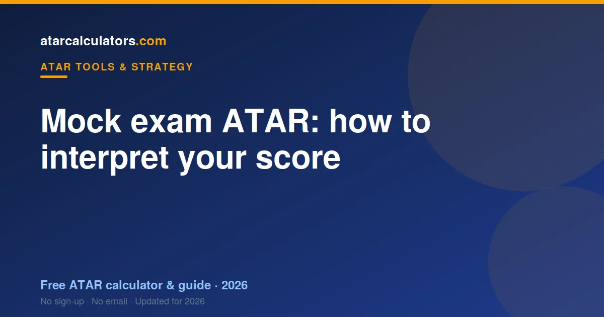

A mock exam ATAR is an estimate based on practice exam results. It is genuinely useful for spotting weak areas and getting used to exam-style questions, but it is less reliable than a trial-based estimate, because mock conditions and marking often differ from the real thing. So treat a mock ATAR as a rough guide and a diagnostic, not a firm prediction, and use what it reveals to focus your revision.
Key takeaways
- A mock exam ATAR is an estimate from practice results.
- It is useful for spotting weak areas.
- It is less reliable than trials, because conditions differ.
- Treat it as a rough guide and diagnostic.
- A low mock is a plan, not a verdict.
- Use what it reveals to focus your revision.

What a mock exam ATAR is
A mock exam ATAR is an estimate produced from your practice, or “mock”, exam results. You sit exam-style papers, mark them, and feed the marks into a predictor to get an estimated ATAR.
Mocks might be run by your school, a tutor, or set by yourself using past papers. They are practice runs, designed to help you prepare, rather than official assessments that count towards your marks.
So a mock exam ATAR is a rough projection from practice conditions. It is a preparation tool, not a formal result, and it should be read in that light.
How to interpret your score
Read your mock ATAR as a ballpark, not a precise figure. It tells you roughly where you stand if your current practice performance held, which is useful for orientation but not a guarantee.
More valuable than the number is the detail behind it: which subjects and topics cost you marks. A mock is at its best as a diagnostic, showing you exactly where to focus before the real exams.
So do not fixate on the single ATAR figure. Look at the marks underneath it, subject by subject, and let those guide your revision. That is where a mock earns its value.
How accurate is a mock exam ATAR?
A mock exam ATAR is less accurate than a trial-based one, mainly because the conditions and marking often differ from the real exams. A self-marked mock, or one under relaxed conditions, can flatter or understate your true level.
The marks you feed in are the limit. If your mock was marked generously, or sat without full exam pressure, the estimate will be optimistic. If it was harsh or unfamiliar, it may understate you.
So treat a mock estimate with more caution than a trial one. It is a useful early signal, but its accuracy depends heavily on how realistic the mock actually was. See how accurate predictors are.
Should a low mock worry you?
Not unduly. A low mock is common and often reflects unfinished revision, unfamiliar conditions, or harsh marking, rather than your true final level. It is early feedback, not a final judgement.
In fact, a low mock is useful: it shows you where the gaps are while there is still time to fix them. Students who respond to a low mock with targeted work often improve substantially by finals.
So read a low mock as a plan, not a verdict. It is telling you what to work on, which is exactly what a practice exam is for.
What your mock ATAR tells you
A mock ATAR tells you roughly where you stand, and more importantly, where your marks are being lost. It is a snapshot of your current exam performance, with the detail to act on.
What it does not tell you is your final result. Too much can change between a mock and finals, especially given the softer conditions. So take the direction it offers, not the number as destiny.
How mocks differ from trials
Mocks and trials are related but not the same. Trials are usually formal, run by your school under exam conditions, and often feed into your school assessment. Mocks are practice runs, less formal, and do not count.
Because trials are more realistic and more rigorously marked, a trial-based estimate is generally more reliable than a mock one. Mocks are for practice and diagnosis; trials are a closer preview of the real thing.
Use both. Mocks let you practise often and find gaps early; trials give you a sterner, more realistic checkpoint. See predicting from trial results for the stronger signal.
Using mocks well
To get the most from mocks, make them as realistic as possible: full papers, timed, under quiet conditions, marked honestly against the criteria. The closer to real exam conditions, the more useful the result.
Then act on what they reveal. Note every place you lost marks and turn it into a revision target. A mock you learn nothing from is a wasted opportunity; a mock you act on is powerful preparation.
Calculate and interpret your mock ATAR
To turn your mock marks into an estimate, use our ATAR predictor. It applies recent official scaling and your state’s rules, so your practice marks become a grounded ballpark.
Then focus on the detail: the subjects and topics that cost you marks. Read the number as a rough guide, and let the underlying results steer your revision toward the real exams.
Common questions
How accurate is a mock exam ATAR?
Less accurate than a trial-based one, mainly because mock conditions and marking often differ from the real exams. A generously marked or relaxed mock will flatter your estimate; a harsh one may understate you. Treat it as a rough guide.
What does my mock ATAR tell you?
Roughly where you stand if your current practice performance held, and more usefully, where your marks are being lost. It is best read as a diagnostic that points your revision at specific weak areas.
Should a low mock ATAR worry me?
Not unduly. Low mocks are common and often reflect unfinished revision or unfamiliar conditions rather than your true final level. Read a low mock as a plan for what to work on, not a verdict.
How do mocks differ from trials?
Trials are usually formal, run under exam conditions and often feed into your school assessment. Mocks are practice runs that do not count. Because trials are more realistic and rigorously marked, a trial-based estimate is generally more reliable.